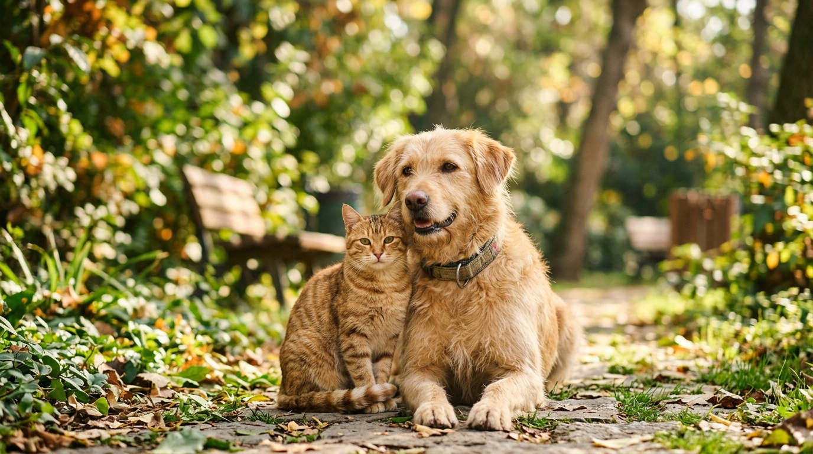

Küçədəki dilsiz dostlarımıza birgə ümid olaq!
Bakı və regionlarda küçədə yaşayan sahibsiz it və pişiklərə kömək edin, itmiş ev heyvanlarının sahiblərinə qovuşmasını təmin edin və qayğıya ehtiyacı olan dördayaqlıları xəritədə bildirin.

Necə Dəstək Ola Bilərsiniz?
Hər bir bildiriş bir canın xilas olmasına və ya isti yuvaya qovuşmasına səbəb ola bilər.
Sahibsiz Heyvan Bildirişi
Küçədə gördüyünüz sahibsiz it və ya pişiyin şəklini çəkib məkanı ilə birlikdə göndərin. İnsanlar məlumatlansın və himayəyə götürsün.
- Şəkli və növü seçin
- Məkanı (GPS/Ünvan) qeyd edin
- Saytda dərhal paylaşılsın
İtmiş Heyvan Elanı
Ev heyvanınız itib? Şəklini, fərqləndirici xüsusiyyətlərini və itdiyi ərazini paylaşın ki, ətrafdakı insanlar tapmağa kömək etsin.
- Heyvanın adını və cinsini yazın
- Əlaqə nömrənizi daxil edin
- Şəhər üzrə axtarışa başlanılsın
"Qayğı Lazımdır" Bildirişi
Müəyyən ərazidə aclıq, susuzluq və ya xəstəlik çəkən heyvan görürsünüzsə, bildirin ki, könüllü komandamız gedib heyvanı bəsləsin və baxsın.
- Heyvanın vəziyyətini qeyd edin
- Dəqiq ərazi ünvanını bildirin
- Könüllülər yemək və su çatdırsın
Son Əlavə Olunan Bildirişlər
Könüllü olmaq və ya bəsləməyə qoşulmaq istəyirsiniz?
Bizim komandamız Bakının müxtəlif məhəllələrində və qəsəbələrində aclıq çəkən heyvanları quru yemək və su ilə təmin edir. Əgər siz də bu nəcib işin bir parçası olmaq istəyirsinizsə, bizimlə əlaqə saxlayın.